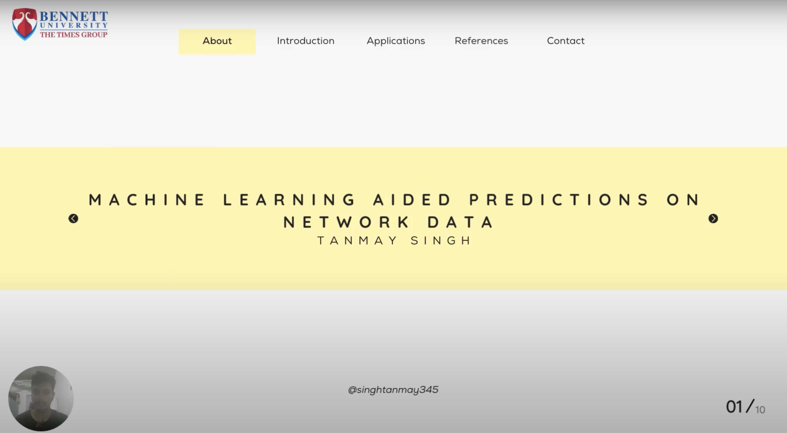

-
Letter of Appreciation for academic performance,
- Received LOA from Dean, School of Computer Science Engineering & Technology for being in the top 2% of the class.
- Received LOA from Dean, School of Computer Science Engineering & Technology for being in the top 15% of the class throughout all semesters till now.
- Completed Cloud Computing Track and Data Science & Machine Learning Track.
- Certificate Of Achievement - Project Showcase
- Awarded 2nd Position in Event Project Hack.
- Certificate Of Achievement - Redesign the Web, APOGEE' 23
Videos

Specialization: Artificial Intelligence
- Semester I - 8.55 SGPA
- Semester II - 9.57 SGPA
- Semester III - 8.91 SGPA
- Semester IV - 8.61 SGPA
- Semester V - 9.82 SGPA
- Streamed Bennett University's first tech fest Zenevia (1-Week Long) on YouTube using OBS. Received Letter of Appreciation from Dean, Student Affairs for this.
- Cabinet Minister for School Dean- School of Computer Science Engineering & Technology (January 2022-June 2022)
- Vice President- Research & Projects at Bennett Artificial Intelligence Society
2023
April 2023 - Present
Undergraduate Research Internship
Internship, Full-Time
- I am working as a research intern under the supervision of Prof. (Dr.) Tanveer Ahmed.
- I will be involved in developing a legal analytics platform that utilizes Natural Language Processing (NLP) to analyze legal data.
- I will be responsible for predicting the outcome of legal cases using the platform and providing recommendations to lawyers and clients before filing a case
- I will be leveraging large amounts of legal data, including case law, precedents, and legal texts, to help lawyers make more informed decisions.
- I will be gaining extensive experience in the field of LLMs, legal analytics and NLP, which will further enhance my skills and knowledge.
2023
January 2023 - Present
Undergraduate Researcher (NLP)
Part-Time Internship (Remote)
- Currently working on NLP based research project- Fake News Classification
- Developed a novel dataset and published a paper in the 4th Doctoral Symposium on Computational Intelligence (DoSCI-2023)-An International Conference.
- Currently developing an automated fake news detection method using VAE model for efficient and interpretable classification.
- Aim to contribute towards combating fake news by leveraging NLP techniques.
- Team: Ms Shivani Tufchi (PhD Scholar), Dr Tanveer Ahmed (Associate Professor), Dr Ashima Yadav (Assistant Professor), Arnav Tyagi (CS Undergraduate), Parijat Rai (CS Undergraduate)
⚠️
⏱️
2022
May 2022 - Aug 2022
Data Analyst Intern
Full-Time Internship (On-site)
- Worked on Data Formatting, Organized and cleaned messy data.
- Worked on Importing Data from SharePoint and other sources, Transforming Data, Data Modelling, DAX, and creating visuals.
- Researched how to use Python in Power BI. Replicated a Power BI visual from a Report using Python Visual in Power BI.
- Skills: Data Storytelling · Python (Programming Language) · Microsoft Power BI · Microsoft Excel
⛲ Adversarial Attacks on Machine Learning & Deep Learning Models
Python, scikit-learning, PyTorch, OpenCV
March 2023 - Present
- Currently working on a research project on adversarial attacks on machine learning and deep learning models with 3 other undergraduates and a professor
- The study will involve collecting a publicly available image dataset and dividing it into train and test sets.
- Both a deep learning model (CNN) and a machine learning model (SVM) will be trained and optimized for image classification, and their accuracy will be tested on the same dataset.
- Adversarial attacks will be generated and used to test the accuracy of the models, which will decrease significantly.
- Two adversarial training models will be used for defense mechanisms, and their performance will be compared against adversarial attacks on both machine learning and deep learning models.
- We are also working on a paper that will be submitted in a conference
⛲ Machine Learning aided prediction of Polycystic Ovary Syndrome
Python, scikit-learn
Feb 2022 - May 2022
- With 3 other undergraduates and under guidance of two assistant professors, applied different ML algorithms to predict PCOS and did a comparative analysis of all algorithms.
- Random Forest algorithm gave the best results with an accuracy of 93%